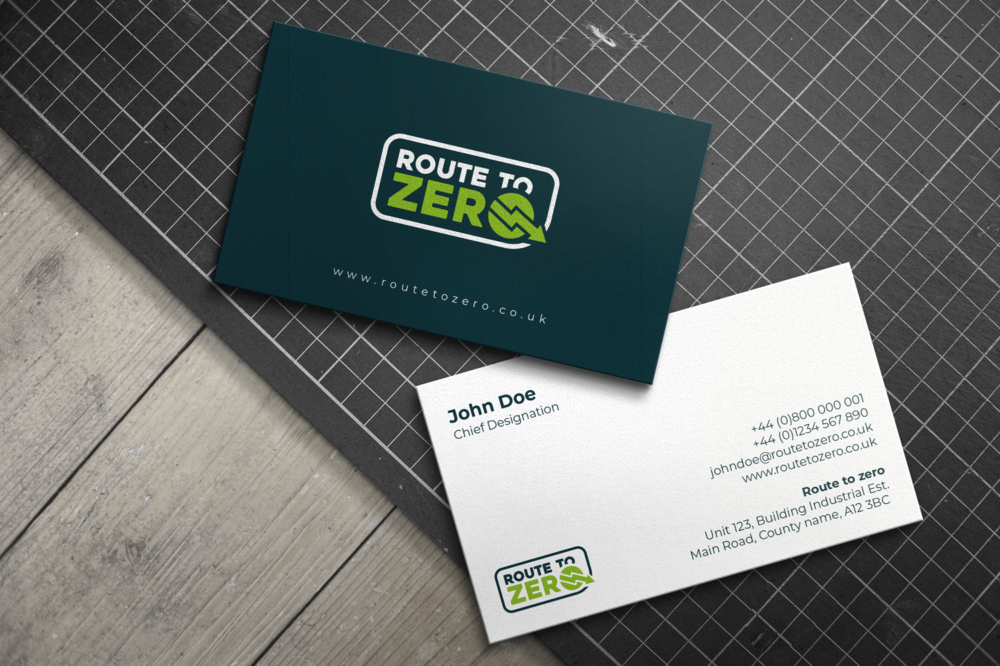
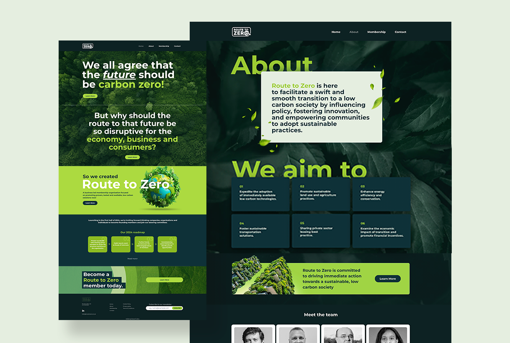

The Context
Route to Zero is a business-led membership organisation dedicated to accelerating the UK's transition to net zero. It operates at the intersection of government policy, industry leadership, and public engagement. With serving MPs, former MPs, and MEPs on its board, the organisation needed design that communicated authority, credibility, and ambition without relying on sustainability branding clichés.
The Objective
Create a complete brand identity, design and build a website, develop all social media and stakeholder communications, and design event materials, all from scratch. The brand needed to work in Westminster, in boardrooms, and in public-facing campaigns while feeling established from day one.
The Approach
The logo combines a route symbol with zero: simple, memorable, and immediately communicative. The color palette centers on deep greens and clean whites, avoiding overused bright-green sustainability messaging. Typography is authoritative but accessible. The website was designed to present the organisation's mission, team, membership benefits, and policy positions with clarity and weight.

The Execution
The design work included: complete brand identity with logo, color system, typography, and brand guidelines; full website designed and built from scratch; all social media content and campaign visuals; stakeholder and membership communications; business cards, email signatures, and corporate stationery; event design for launches at the Royal Institution of Chartered Surveyors and Royal College of General Practitioners; and visual identity for the 'Targets to Tactics' policy report, launched alongside Steve Rotheram, Mayor of Liverpool City Region.


Outcome
The brand has been presented at Westminster, at the Royal Institution of Chartered Surveyors, and at the Royal College of General Practitioners. It has been seen by serving MPs, policy advisors, and senior business leaders. The 'Targets to Tactics' report launch was attended by the Mayor of Liverpool City Region. Route to Zero's design communicates at the level its stakeholders expect. It looks like an institution, not a startup.